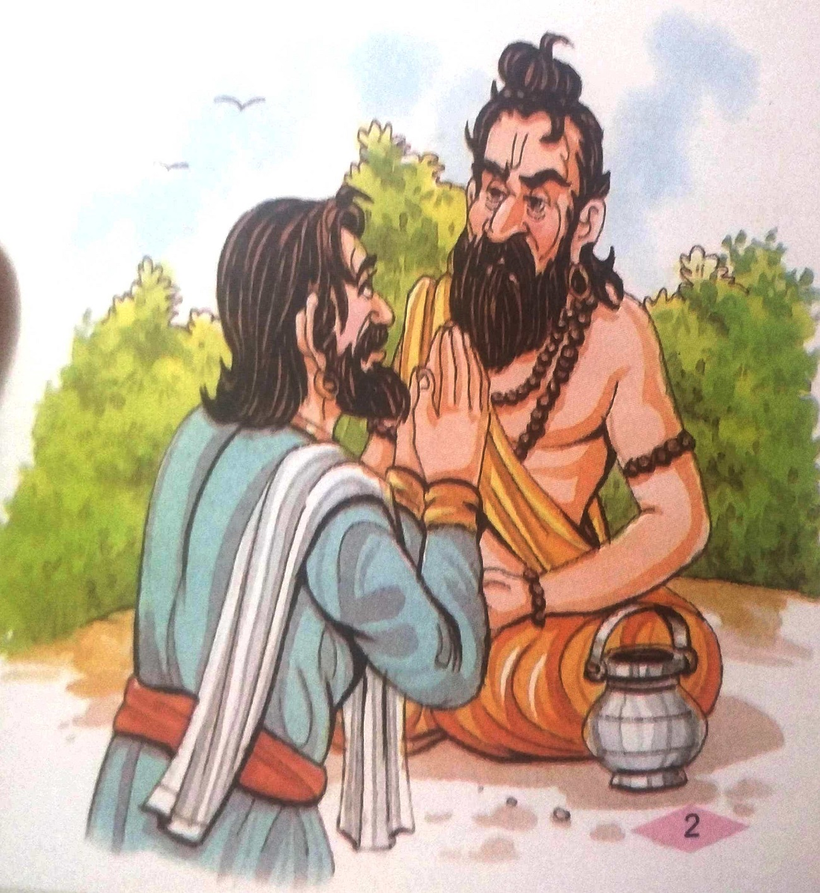

૫-જાદુઈ મંત્રો
રાજા વિક્રમ હાથમાં તલવાર લઈને વેતાલાની પાછળ દોડ્યો. તે વેતાલને ઝાડ પરથી નીચે લાવ્યો,
ખભા પર લઈ ગયો અને ફરી એક વાર નીકળી ગયો. વેતાલે બીજી વાર્તા શરૂ કરી-એક સમયે ગુણાકર નામનો એક
બ્રાહ્મણ છોકરો રહેતો હતો. જ્યારે તે મોટો થયો ત્યારે તે જુગારી બન્યો. તે જુગારમાં બધું હારી ગયો.
તેણે પોતાનું ગામ છોડવું પડ્યું. રસ્તામાં તે એક સાધુને મળ્યો. ગુણકરે તેને બધી વાત કહી.સાધુજીને
તેના પર દયા આવી. તેણે તેને કહ્યું, "તને ભૂખ લાગી છે આ લે કાંઈક ખાઈ લે.
આટલું કહીને ઋષિએ જાદુઈ મંત્રનો ગણગણાટ શરૂ કર્યો. એક સુંદર સ્ત્રી તેની સામે આવી.
સાધુજીએ તેમને ગુણાકરની સેવા કરવાની આજ્ઞા કરી. તે જ સમયે સોનાનો એક મહેલ દેખાયો જેમાં ગુણકરે
આનંદપૂર્વક રાત વિતાવી. સવારે જ્યારે તે જાગી ત્યારે બધું જ ગાયબ હતું. તે ઋષિ પાસે ગયો અને કહ્યું,
"મહારાજ! હું એ સુખ વિના રહી શકતો નથી. કૃપા કરીને મને તે બધી વસ્તુઓ પાછી આપો."

સાધુજીએ તેને સમજાવ્યું. "જો તમે પાણીમાં ઉભા રહીને કેટલાક જાદુઈ મંત્રોનો જાપ કરશો તો
તમે તે વસ્તુઓ પાછી મેળવી શકો છો. પરંતુ તમે મારી સિદ્ધિઓ દ્વારા જ સફળ થઈ શકો છો."
સાધુજીએ ચેતવણી આપી, “સફળતનો માર્ગ અત્યંત મુશ્કેલ છે. જો તમે જાદુઈ મંત્રોને
સફળતાપૂર્વક સાબિત ન કરી શકો તો મારી જાદુઈ સિદ્ધિઓ પણ નાશ પામશે." પણ ગુણાકર પોતાના નિર્ણય પર અડગ
રહ્યો. તેથી ઋષિ તેને નદી કિનારે લઈ ગયા અને તેને જાદુઈ મંત્રો સંભળાવ્યા.તેણે તેને એમ પણ કહ્યું
કે, “જાદુઈ મંત્રોનો જાપ કરતી વખતે તમને અનેક પ્રકારના ભ્રમ થશે. પછી હું મારી સિદ્ધિઓનો ઉપયોગ
તમારા પર કરીશ. તે પછી તમારે સળગતી ચિતામાં પ્રવેશ કરવો પડશે.
ગુણાકર ધ્યાન માં તલ્લીન થઈ ગયા અને જપ કરવા લાગ્યા. તેના મંત્રો જાપ કરતી વખતે, તેને
કેટલાક ભ્રમ થવા લાગ્યા, જાણે કે તે બ્રાહ્મણ પરિવારમાં જન્મ્યો હતો, તે પરિણીત હતો, તેની પત્ની ખૂબ
જ સુંદર અને ગુણવાન હતી, તે તેને ખૂબ પ્રેમ કરતી હતી અને તેને ઘણા બાળકો હતા. આ પછી તે પોતાના જન્મ
વિશે બધું જ ભૂલી ગયો.
તે જ સમયે ઋષિએ તેમના જાદુઈ મંત્રનો પાઠ કર્યો અને સળગતી ચિતામાં પ્રવેશ કરવા માટે
તૈયાર થઈ ગયા. હવે ગુણકરને એવો ભ્રમ હતો કે તેના માતા-પિતા, તેની પત્ની અને બાળકો તેને અગ્નિમાં
પ્રવેશતા અટકાવી રહ્યા છે. ગુણાકર શંકા કરવા લાગ્યો કે સાધુજીએ તેને શું કહ્યું હતું.
પરંતુ તેના મનમાં ઘણી બધી શંકાઓ સાથે પણ તે આગમાં પ્રવેશ્યો. તેણે ચિતા પર પગ મૂકતાં જ આગ ઓલવાઈ ગઈ.
ગુણાકર આશ્ચર્યચકિત થઈ ગયો. તેણે સાધુજી પાસે જઈને બધું કહ્યું. ઋષિએ કહ્યું, "મને લાગે છે કે તમે
ભૂલ કરી છે. મને તમારા મંત્રોની પરીક્ષા કરવા દો."

જ્યારે સાધુજીએ તેમના જાદુઈ મંત્રનો ઉપયોગ કર્યો ત્યારે કંઈ થયું નહીં. આ રીતે બંનેની
શક્તિઓ નષ્ટ થઈ ગઈ.
સાધુજી માથું પકડીને બેસી ગયા અને પસ્તાવો કરવા લાગ્યા. એમ કહીને વેતાળાએ કહ્યું, “હવે
વિક્રમ! મને જવાબ આપો. શા માટે તે બંનેએ તેમની જાદુઈ શક્તિ ગુમાવી દીધી?"
રાજા વિક્રમે તરત જ જવાબ આપ્યો, “એ તો સાદી વાત છે, વેતાલા. માત્ર શુદ્ધ અને પવિત્ર
લોકો જ મોક્ષ અથવા સિદ્ધિઓ પ્રાપ્ત કરી શકે છે. ગુણકરને સાધુજી પર શંકા થઈ ગઈ હતી અને સાધુજીએ એક
અયોગ્ય વ્યક્તિને જાદુઈ શક્તિઓ આપવાનો પ્રયાસ કર્યો હતો. ,
વેતાલાએ કહ્યું, "વિક્રમ! તેં સાચો જવાબ આપ્યો છે. પણ હવે હું જાઉં છું. તેં તારું મૌન
તોડ્યું
છે."એમ કહીને વેતાલા ઊડીને એ જ ઝાડ પર લટકી ગયો.